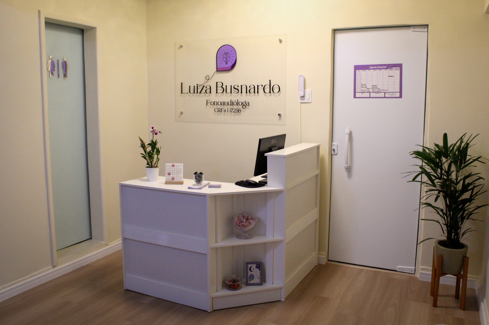

Atividades para casa
Propostas simples para fazer em família, com materiais que você já tem em casa. Escolha uma, reserve alguns minutos e converse com as crianças.

Uma imagem, muitas histórias
- 1º- ObserveOlhem juntos para a imagem em silêncio por um minuto.
- 2º- PergunteO que está acontecendo? Quem são essas pessoas?
- 3º- InventeCada pessoa acrescenta uma frase à história.
Não existe resposta certa. O importante é conversar e ouvir as ideias das crianças.
Ideias para compartilhar
6 atividades

Arte
Histórias em imagens
Crie uma sequência de desenhos que conta o seu dia.

Sentidos
O que estou sentindo?
Cartas de emoções para conversar sobre o que cada um sente.
Conversa
O que temos por aqui?
Nomeie objetos do cotidiano e conversem sobre onde ficam e para que servem.
Desenho
Lápis e caminhos
Siga traços e labirintos para treinar a atenção e a coordenação.
Natureza
Letras e vizinhança
Procure letras e formas durante um passeio pelo bairro.

Escrita
Lista de curiosidades
Anote perguntas que surgem no dia e descubram as respostas juntos.